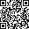

Настольная табличка
Метка клеится с изнанки прямо за кодом, поэтому приложить телефон и навести камеру нужно в одну и ту же точку.
Сторона
Фон
Xami_Doo
шашлык · halal · 24/7
Меню
Отзывы
Акции

Wi-Fi
Instagram
TikTok
Наведите телефон
на QR-код или NFC
Про печать
- Ссылка в коде:
https://menyukz.com/xamidoo/ - Печать → NFC-стикер на изнанку строго за кодом → в пакет для ламинации → под ламинатор.
- Обрезать, оставив 2–3 мм прозрачного поля от плёнки, углы скруглить дыроколом.
- Записать метку до ламинации: после уже не переделать.
- Ламинация только матовая — глянец бликует, и камера перестаёт ловить код.
Светлый фон стоит по умолчанию — он в стиле самого меню и печатается на чём угодно. Тёмный вариант не пускайте на струйный принтер: сплошная заливка на всю страницу ложится полосами, съедает картридж и долго сохнет. Тёмный — только в типографию или на лазерный.